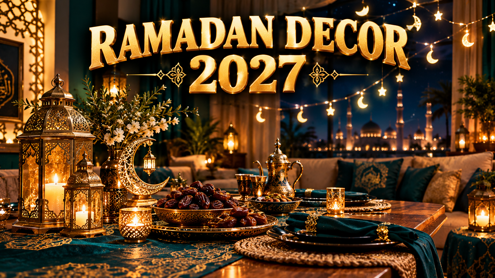

Ramadan Decoration Ideas 2027: Lanterns & Lights
Published October 12, 2026 · Updated October 12, 2026 · By EventBuzz Team

Ramadan is expected to begin on Monday, February 8, 2027 in most countries (Tuesday, February 9 in Pakistan, moon-sighting dependent), and many families decorate their homes to mark the start of the holy month. Decorating for Ramadan is a growing tradition: lanterns glowing in windows, crescents and stars strung across the living room, and an iftar table that looks as special as the gathering feels. This guide covers lantern styles, crescent and star motifs, iftar table styling, entryway decor, DIY paper crafts the whole family can make, and the light-safety basics that keep every arrangement safe through a month of nightly use.
Lantern Styles: The Heart of Ramadan Decor
The fanous — the traditional Ramadan lantern — comes in more forms than most people realize. Brass and metal lanterns with colored glass panels are the classic choice: they cast patterned light across walls and look stunning on a sideboard or entryway table. Moroccan-style filigree lanterns create intricate shadows and suit a bohemian table setting. Paper and fabric lanterns — including star-shaped paper lanterns strung across a ceiling — are lightweight, inexpensive, and perfect for hanging in clusters at different heights.
For a modern look, consider LED lantern sets: they glow like traditional lanterns but run on batteries or USB, stay cool to the touch, and can be left on all evening without worry. Cluster three lanterns of different sizes in a corner rather than scattering single lanterns around the room — grouping creates one strong focal point instead of visual clutter. A string of fairy lights woven through a lantern cluster adds depth and makes even budget lanterns look magical after dark.
Crescent & Star Motifs Everywhere
The crescent moon and star are the signature shapes of Ramadan decor, and they work in almost every material. Paper garlands of gold crescents strung across a mantle or doorway are the fastest way to signal the season — cut them from metallic cardstock and they catch the light beautifully. Wooden or acrylic crescent stands make elegant tabletop pieces, especially paired with a small dish of dates beneath them.
Hang star paper lanterns in the living room or from a balcony for an outdoor glow, and use crescent napkin rings or moon-shaped placemats on the iftar table for a detail guests will notice. For windows, simple fairy-light crescents — lights bent into a crescent shape on the glass — glow for the whole street to see. The key is restraint: pick the crescent as your repeated motif and let everything else stay simple, so the theme reads as elegant rather than busy.
Iftar Table Styling
The iftar table is where Ramadan decor matters most — it is set every single night. Start with a table runner in deep green, navy, or gold, the classic Ramadan palette. A low centerpiece of lanterns flanked by dates in a brass bowl and a small crescent figure keeps the sight lines open so people can talk across the table. Layered lighting is the secret: one or two lanterns plus a short string of warm fairy lights along the runner creates the glow without competing with the food.
Practical details matter more than ornaments here. Use large platters and tiered stands to fit a full iftar spread on a normal table, keep a dedicated drinks station to one side so the main table is not crowded, and place dates and water at each setting — it is both traditional and kind to guests who arrive right at the call to prayer. Cloth napkins in gold or green, simple glassware, and one repeated motif (crescent napkin rings, for example) make the table feel festive without a daily redecorating effort.
Entryway & Living Room Decor
The entryway sets the tone: a "Ramadan Mubarak" banner over the door or on the wall facing it, a lantern cluster on the console table, and a wreath of artificial greenery with gold crescents on the front door tell every guest the month has arrived. A small sign with the day's fasting times is a thoughtful touch for households with guests.
In the living room, think cozy corners rather than whole-room overhauls. A prayer corner with a folded prayer mat, a small lantern, and a Quran on a stand becomes a beautiful focal point. Drape fairy lights along bookshelves or curtain rods, swap cushion covers for gold and deep-green ones, and hang a paper lantern mobile in a corner the kids can reach. Because Ramadan 2027 falls in February and March, evenings are long — decor that glows after sunset gets maximum effect all month.
DIY Paper Crafts for the Whole Family
Handmade decor costs almost nothing and turns decorating into a family activity before the month begins. These crafts work for all ages:
- Paper lantern chains: cut strips of colored paper, loop them into lantern shapes, and string them together — a classic that looks great in doorways.
- Crescent and star garlands: trace cookie cutters onto metallic cardstock, cut, hole-punch, and thread onto string.
- Mosque silhouette window art: black paper mosque silhouettes taped to windows look stunning from the street when backlit at night.
- Countdown calendars: a 29/30-pocket paper calendar with a small treat or dua card for each night — a beloved kids' tradition.
- Dua cards: decorate index cards with the family's favorite duas and stand them on the iftar table.
- Paper plate moons: the simplest craft of all — paint paper plates gold and hang them as full moons among the crescents.
Do the crafting the weekend before Ramadan starts so decorations go up fresh on the first night — and store everything carefully, because good paper decor survives several Ramadans.
Light Safety: Glow Without Worry
Ramadan decor stays lit for hours every night for a month, so safety is not optional. Prefer LED over real flame: LED tealights and string lights stay cool, cannot tip over, and are safe around children and fabric lanterns. If you do use real candles or oil lamps, keep them in glass enclosures, away from curtains and paper crafts, and never leave them burning unattended or overnight.
Check fairy light wiring for fraying before hanging, especially on lights reused from previous years, and do not overload a single outlet with multiple strings. Keep paper lanterns away from heat sources — they are safe with LEDs but not with real candles inside. Finally, turn everything off at bedtime: a single power strip with a switch makes this a one-step nightly habit.
Ramadan decor is not about impressing guests. It is about marking the month as special for the people who live in the house — especially the children, who will remember the lanterns long after they forget the menu.
Frequently Asked Questions
When does Ramadan start in 2027?
Ramadan 2027 is expected to begin on Monday, February 8, 2027 in most countries, and on Tuesday, February 9, 2027 in Pakistan. Final dates are confirmed by the sighting of the moon. Eid al-Fitr is expected around March 8-9, 2027.
What is the most important Ramadan decoration?
Lanterns are the signature Ramadan decoration — brass or Moroccan-style lanterns with colored glass, or LED lanterns for safety. A crescent-and-star garland and a styled iftar table complete the core look.
How can I decorate for Ramadan on a budget?
DIY paper crafts — crescent garlands, paper lantern chains, mosque window silhouettes — cost almost nothing. One string of warm fairy lights and a few LED tealights transform a room for very little money.
Are real candles safe for Ramadan lanterns?
Real flames are risky around paper decor and children. LED tealights and string lights give the same glow without the fire risk. If you use real candles, keep them in glass enclosures, away from fabrics, and never leave them unattended.
How do I store Ramadan decorations for next year?
Wrap glass lanterns individually in newspaper or cloth, coil fairy lights loosely around cardboard to prevent tangling, and store paper garlands flat in a labeled box. Good decor lasts many Ramadans with careful storage.
What colors work best for Ramadan decor?
Deep green, navy blue, and gold are the classic Ramadan palette. Metallic gold accents on a deep background create the warm, glowing look the month is known for.
Conclusion
Decorating for Ramadan 2027 does not require a big budget or a design degree. A few glowing lanterns, a crescent garland, a thoughtfully set iftar table, and some handmade paper crafts turn an ordinary home into a place that feels like Ramadan the moment the sun sets. Start with the lanterns, add the crescents, keep the lights LED-safe, and let the month glow.
More Ramadan help from EventBuzz:
Ramadan Mubarak — may your month be full of light, peace, and answered duas!
Eid & Ramadan Picks
Lanterns, decorations and thoughtful gifts for Ramadan and Eid.


Prices shown at the time of publishing and can change. Links take you to AliExpress or Temu, where shipping and delivery details are shown.